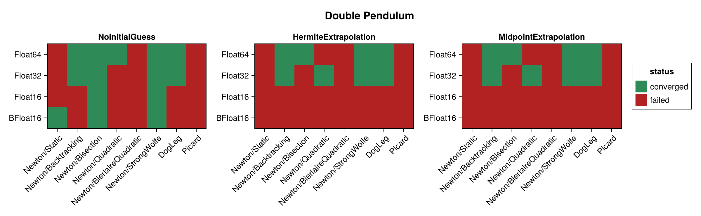
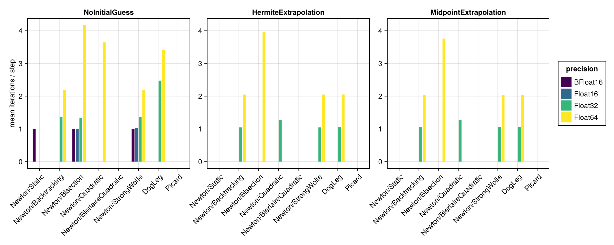
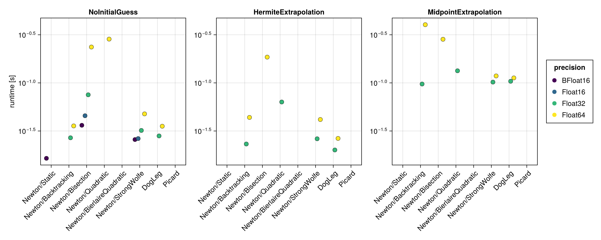
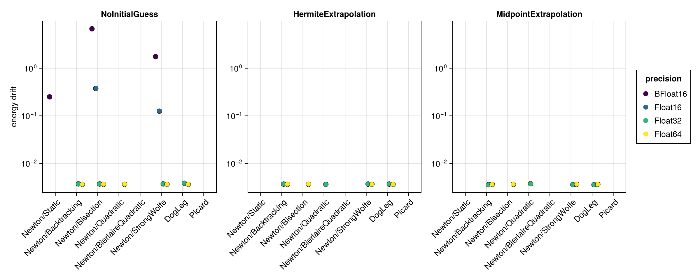
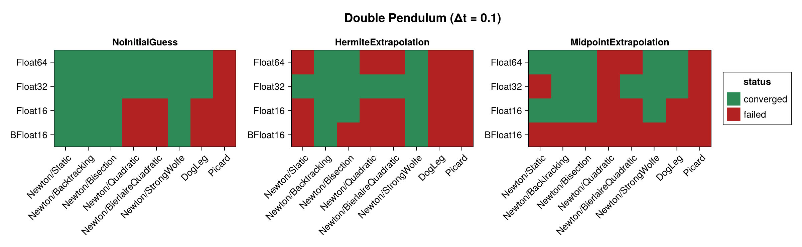
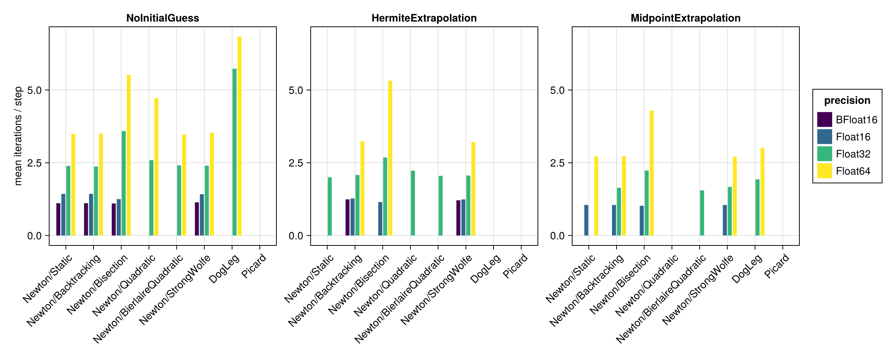
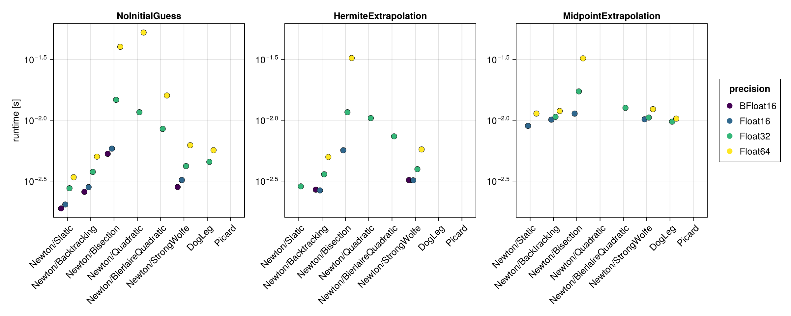
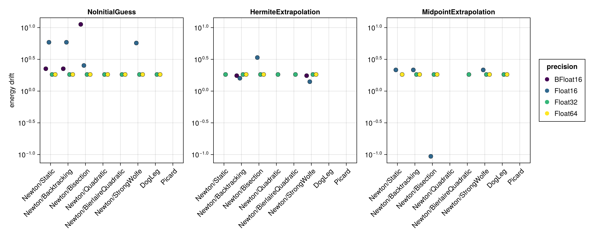

Double Pendulum
The double pendulum is a chaotic, strongly nonlinear Hamiltonian system. It is built here with hodeproblem (the canonical Hamiltonian form), so the implicit midpoint equations require genuine nonlinear iterations at every step. Because the Hamiltonian $H(t, q, p)$ depends on both the coordinates $q$ and the momenta $p$, the energy-drift proxy is evaluated from the full $(q, p)$ state.
Because the forces are $O(g m l)$, this problem's nonlinear residual bottoms out well above $\varepsilon(T)$, so the solver tolerance is relaxed to $256\,\varepsilon(T)$. That floor is a property of the problem's scale, not of the precision: measured, it sits at $\approx 200 \dots 260\,\varepsilon(T)$ at every precision. It is also why the results table below carries an at_tolerance column with every row flagged — on this problem a converged run stops at its target rather than below it. Read the caveat literally at 16-bit: $256\,\varepsilon(\texttt{BFloat16})$ is $2.0$, comparable to the energy itself, so a BFloat16 row here reports having met a target too loose to say much.
The benchmark below is regenerated at documentation build time with a single, fast timing pass. See the driver script scripts/midpoint_double_pendulum.jl for accurate BenchmarkTools measurements. The results are shown first for the standard step $\Delta t = 0.01$ and then repeated for a coarse step $\Delta t = 0.1$ (see Coarse time step (Δt = 0.1)).
using SolverBenchmark
spec = double_pendulum_spec(timespan = (0.0, 10.0), timestep = 0.01)
df = cached_sweep("double_pendulum_dt0.01") do
run_benchmark(spec; timing = :quick, verbose = false, quiet = true)
endConvergence
plot_convergence(df; title = "Double Pendulum")
Nonlinear iterations
Mean number of nonlinear-solver iterations per time step (converged runs only):
plot_iterations(df)
Run time
plot_runtime(df)
Energy drift
Drift of the conserved energy $H(t, q, p)$ of the double pendulum:
plot_energy_drift(df)
Discussion
- The problem is chaotic and nonlinear, so Newton needs genuine iterations at every step. All six line searches behave similarly;
Newton/Quadraticis the weakest of them but still converges for two thirds of the runs.Picardnever converges here, and atΔt = 0.01it is the only failure atFloat32/Float64; at the coarse stepDogLegjoins it. - Precision dominates: 21/24 at both
Float32andFloat64, 11/24 atFloat16and 5/24 atBFloat16(58/96 overall; 64/96 at the coarse step). Every converged row is flagged in theat_tolerancecolumn, because on this problem the residual floor is the tolerance — see the note above. - No closed-form solution is available, so accuracy is judged solely through the energy drift, which scales with the floating point precision.
Results table
markdown_table(summary_table(df))| precision | solver_label | initial_guess | converged | iterations_mean | runtime_s | max_residual | at_tolerance | energy_drift |
|---|---|---|---|---|---|---|---|---|
| BFloat16 | Newton/Static | NoInitialGuess | ✓ | 1.01 | 0.0164 | 1.77 | ✓ | 0.25 |
| BFloat16 | Newton/Static | HermiteExtrapolation | ✗ | — | — | — | ✗ | — |
| BFloat16 | Newton/Static | MidpointExtrapolation | ✗ | — | — | — | ✗ | — |
| BFloat16 | Newton/Backtracking | NoInitialGuess | ✗ | 1.15 | 0.0249 | 2.83 | ✗ | — |
| BFloat16 | Newton/Backtracking | HermiteExtrapolation | ✗ | — | — | — | ✗ | — |
| BFloat16 | Newton/Backtracking | MidpointExtrapolation | ✗ | — | — | — | ✗ | — |
| BFloat16 | Newton/Bisection | NoInitialGuess | ✓ | 1 | 0.0362 | 1.3 | ✓ | 6.75 |
| BFloat16 | Newton/Bisection | HermiteExtrapolation | ✗ | — | — | — | ✗ | — |
| BFloat16 | Newton/Bisection | MidpointExtrapolation | ✗ | — | — | — | ✗ | — |
| BFloat16 | Newton/Quadratic | NoInitialGuess | ✗ | 1.09 | 0.0313 | 5.22 | ✗ | — |
| BFloat16 | Newton/Quadratic | HermiteExtrapolation | ✗ | — | — | — | ✗ | — |
| BFloat16 | Newton/Quadratic | MidpointExtrapolation | ✗ | — | — | — | ✗ | — |
| BFloat16 | Newton/BierlaireQuadratic | NoInitialGuess | ✗ | 1 | 0.0249 | 4.09 | ✗ | — |
| BFloat16 | Newton/BierlaireQuadratic | HermiteExtrapolation | ✗ | — | — | — | ✗ | — |
| BFloat16 | Newton/BierlaireQuadratic | MidpointExtrapolation | ✗ | — | — | — | ✗ | — |
| BFloat16 | Newton/StrongWolfe | NoInitialGuess | ✓ | 1 | 0.0258 | 1.77 | ✓ | 1.75 |
| BFloat16 | Newton/StrongWolfe | HermiteExtrapolation | ✗ | — | — | — | ✗ | — |
| BFloat16 | Newton/StrongWolfe | MidpointExtrapolation | ✗ | — | — | — | ✗ | — |
| BFloat16 | DogLeg | NoInitialGuess | ✗ | 1.37 | 0.0212 | 6.22 | ✗ | — |
| BFloat16 | DogLeg | HermiteExtrapolation | ✗ | — | — | — | ✗ | — |
| BFloat16 | DogLeg | MidpointExtrapolation | ✗ | — | — | — | ✗ | — |
| BFloat16 | Picard | NoInitialGuess | ✗ | 1.33 | 0.118 | 106 | ✗ | — |
| BFloat16 | Picard | HermiteExtrapolation | ✗ | — | — | — | ✗ | — |
| BFloat16 | Picard | MidpointExtrapolation | ✗ | — | — | — | ✗ | — |
| Float16 | Newton/Static | NoInitialGuess | ✗ | 1.11 | 0.022 | 0.265 | ✗ | — |
| Float16 | Newton/Static | HermiteExtrapolation | ✗ | — | — | — | ✗ | — |
| Float16 | Newton/Static | MidpointExtrapolation | ✗ | — | — | — | ✗ | — |
| Float16 | Newton/Backtracking | NoInitialGuess | ✗ | 1.11 | 0.0247 | 0.265 | ✗ | — |
| Float16 | Newton/Backtracking | HermiteExtrapolation | ✗ | — | — | — | ✗ | — |
| Float16 | Newton/Backtracking | MidpointExtrapolation | ✗ | — | — | — | ✗ | — |
| Float16 | Newton/Bisection | NoInitialGuess | ✓ | 1.01 | 0.0455 | 0.247 | ✓ | 0.375 |
| Float16 | Newton/Bisection | HermiteExtrapolation | ✗ | — | — | — | ✗ | — |
| Float16 | Newton/Bisection | MidpointExtrapolation | ✗ | — | — | — | ✗ | — |
| Float16 | Newton/Quadratic | NoInitialGuess | ✗ | 1.13 | 0.0465 | 5.61 | ✗ | — |
| Float16 | Newton/Quadratic | HermiteExtrapolation | ✗ | — | — | — | ✗ | — |
| Float16 | Newton/Quadratic | MidpointExtrapolation | ✗ | — | — | — | ✗ | — |
| Float16 | Newton/BierlaireQuadratic | NoInitialGuess | ✗ | 1.02 | 0.0382 | 4.46 | ✗ | — |
| Float16 | Newton/BierlaireQuadratic | HermiteExtrapolation | ✗ | — | — | — | ✗ | — |
| Float16 | Newton/BierlaireQuadratic | MidpointExtrapolation | ✗ | — | — | — | ✗ | — |
| Float16 | Newton/StrongWolfe | NoInitialGuess | ✓ | 1.02 | 0.0264 | 0.249 | ✓ | 0.125 |
| Float16 | Newton/StrongWolfe | HermiteExtrapolation | ✗ | — | — | — | ✗ | — |
| Float16 | Newton/StrongWolfe | MidpointExtrapolation | ✗ | — | — | — | ✗ | — |
| Float16 | DogLeg | NoInitialGuess | ✗ | — | — | — | ✗ | — |
| Float16 | DogLeg | HermiteExtrapolation | ✗ | — | — | — | ✗ | — |
| Float16 | DogLeg | MidpointExtrapolation | ✗ | — | — | — | ✗ | — |
| Float16 | Picard | NoInitialGuess | ✗ | 1.97 | 0.413 | 75.7 | ✗ | — |
| Float16 | Picard | HermiteExtrapolation | ✗ | — | — | — | ✗ | — |
| Float16 | Picard | MidpointExtrapolation | ✗ | — | — | — | ✗ | — |
| Float32 | Newton/Static | NoInitialGuess | ✗ | 1.66 | 0.0216 | 7.62e-05 | ✗ | — |
| Float32 | Newton/Static | HermiteExtrapolation | ✗ | 1.09 | 0.0258 | 7.62e-05 | ✗ | — |
| Float32 | Newton/Static | MidpointExtrapolation | ✗ | 1.25 | 0.115 | 7.62e-05 | ✗ | — |
| Float32 | Newton/Backtracking | NoInitialGuess | ✓ | 1.37 | 0.0269 | 3.11e-05 | ✓ | 0.00369 |
| Float32 | Newton/Backtracking | HermiteExtrapolation | ✓ | 1.04 | 0.0232 | 3.11e-05 | ✓ | 0.00367 |
| Float32 | Newton/Backtracking | MidpointExtrapolation | ✓ | 1.05 | 0.0973 | 3.04e-05 | ✓ | 0.00356 |
| Float32 | Newton/Bisection | NoInitialGuess | ✓ | 1.34 | 0.0752 | 3.04e-05 | ✓ | 0.00368 |
| Float32 | Newton/Bisection | HermiteExtrapolation | ✗ | 2.27 | 0.0636 | 4.99e-05 | ✗ | — |
| Float32 | Newton/Bisection | MidpointExtrapolation | ✗ | 2.51 | 0.172 | 5.26e-05 | ✗ | — |
| Float32 | Newton/Quadratic | NoInitialGuess | ✗ | 1.26 | 0.0763 | 4.27e-05 | ✗ | — |
| Float32 | Newton/Quadratic | HermiteExtrapolation | ✓ | 1.27 | 0.0633 | 3.04e-05 | ✓ | 0.00362 |
| Float32 | Newton/Quadratic | MidpointExtrapolation | ✓ | 1.27 | 0.134 | 3.05e-05 | ✓ | 0.00372 |
| Float32 | Newton/BierlaireQuadratic | NoInitialGuess | ✗ | 1.35 | 0.0494 | 7.62e-05 | ✗ | — |
| Float32 | Newton/BierlaireQuadratic | HermiteExtrapolation | ✗ | 1.06 | 0.0319 | 7.62e-05 | ✗ | — |
| Float32 | Newton/BierlaireQuadratic | MidpointExtrapolation | ✗ | 1.07 | 0.192 | 7.62e-05 | ✗ | — |
| Float32 | Newton/StrongWolfe | NoInitialGuess | ✓ | 1.37 | 0.032 | 3.31e-05 | ✓ | 0.00369 |
| Float32 | Newton/StrongWolfe | HermiteExtrapolation | ✓ | 1.04 | 0.0262 | 3.24e-05 | ✓ | 0.00367 |
| Float32 | Newton/StrongWolfe | MidpointExtrapolation | ✓ | 1.05 | 0.102 | 3.11e-05 | ✓ | 0.00356 |
| Float32 | DogLeg | NoInitialGuess | ✓ | 2.48 | 0.0281 | 3.91e-05 | ✓ | 0.00381 |
| Float32 | DogLeg | HermiteExtrapolation | ✓ | 1.05 | 0.0201 | 3.71e-05 | ✓ | 0.00367 |
| Float32 | DogLeg | MidpointExtrapolation | ✓ | 1.05 | 0.104 | 3.04e-05 | ✓ | 0.00356 |
| Float32 | Picard | NoInitialGuess | ✗ | 2.05 | 0.0619 | 72.1 | ✗ | — |
| Float32 | Picard | HermiteExtrapolation | ✗ | 2.01 | 0.0547 | 1.24 | ✗ | — |
| Float32 | Picard | MidpointExtrapolation | ✗ | 2 | 0.13 | 0.043 | ✗ | — |
| Float64 | Newton/Static | NoInitialGuess | ✗ | 2.28 | 0.026 | 1.01e-13 | ✗ | — |
| Float64 | Newton/Static | HermiteExtrapolation | ✗ | 2.23 | 0.0299 | 9.8e-14 | ✗ | — |
| Float64 | Newton/Static | MidpointExtrapolation | ✗ | 2.14 | 0.0993 | 1e-13 | ✗ | — |
| Float64 | Newton/Backtracking | NoInitialGuess | ✓ | 2.19 | 0.0357 | 5.67e-14 | ✓ | 0.00363 |
| Float64 | Newton/Backtracking | HermiteExtrapolation | ✓ | 2.05 | 0.0437 | 5.67e-14 | ✓ | 0.00363 |
| Float64 | Newton/Backtracking | MidpointExtrapolation | ✓ | 2.04 | 0.403 | 5.62e-14 | ✓ | 0.00363 |
| Float64 | Newton/Bisection | NoInitialGuess | ✓ | 4.17 | 0.236 | 5.67e-14 | ✓ | 0.00363 |
| Float64 | Newton/Bisection | HermiteExtrapolation | ✓ | 3.96 | 0.185 | 5.67e-14 | ✓ | 0.00363 |
| Float64 | Newton/Bisection | MidpointExtrapolation | ✓ | 3.76 | 0.284 | 5.67e-14 | ✓ | 0.00363 |
| Float64 | Newton/Quadratic | NoInitialGuess | ✓ | 3.64 | 0.285 | 5.66e-14 | ✓ | 0.00363 |
| Float64 | Newton/Quadratic | HermiteExtrapolation | ✗ | 2.9 | 0.281 | 1e-13 | ✗ | — |
| Float64 | Newton/Quadratic | MidpointExtrapolation | ✗ | 2.75 | 0.345 | 1e-13 | ✗ | — |
| Float64 | Newton/BierlaireQuadratic | NoInitialGuess | ✗ | 2.37 | 0.094 | 1.01e-13 | ✗ | — |
| Float64 | Newton/BierlaireQuadratic | HermiteExtrapolation | ✗ | 2.15 | 0.0831 | 1.01e-13 | ✗ | — |
| Float64 | Newton/BierlaireQuadratic | MidpointExtrapolation | ✗ | 2.16 | 0.155 | 1e-13 | ✗ | — |
| Float64 | Newton/StrongWolfe | NoInitialGuess | ✓ | 2.19 | 0.0476 | 5.67e-14 | ✓ | 0.00363 |
| Float64 | Newton/StrongWolfe | HermiteExtrapolation | ✓ | 2.05 | 0.0416 | 5.67e-14 | ✓ | 0.00363 |
| Float64 | Newton/StrongWolfe | MidpointExtrapolation | ✓ | 2.04 | 0.118 | 5.62e-14 | ✓ | 0.00363 |
| Float64 | DogLeg | NoInitialGuess | ✓ | 3.42 | 0.0354 | 5.91e-14 | ✓ | 0.00363 |
| Float64 | DogLeg | HermiteExtrapolation | ✓ | 2.05 | 0.0265 | 5.67e-14 | ✓ | 0.00363 |
| Float64 | DogLeg | MidpointExtrapolation | ✓ | 2.04 | 0.113 | 5.62e-14 | ✓ | 0.00363 |
| Float64 | Picard | NoInitialGuess | ✗ | 2.05 | 0.134 | 72.1 | ✗ | — |
| Float64 | Picard | HermiteExtrapolation | ✗ | 2 | 0.128 | 1.24 | ✗ | — |
| Float64 | Picard | MidpointExtrapolation | ✗ | 2.01 | 0.189 | 0.0431 | ✗ | — |
Coarse time step (Δt = 0.1)
With a ten times larger step the equations become more strongly nonlinear, which stresses the solvers noticeably more than the $\Delta t = 0.01$ results above.
spec1 = double_pendulum_spec(timespan = (0.0, 10.0), timestep = 0.1)
df1 = cached_sweep("double_pendulum_dt0.1") do
run_benchmark(spec1; timing = :quick, verbose = false, quiet = true)
endConvergence
plot_convergence(df1; title = "Double Pendulum (Δt = 0.1)")
Nonlinear iterations
plot_iterations(df1)
Run time
plot_runtime(df1)
Energy drift
plot_energy_drift(df1)
Results table
markdown_table(summary_table(df1))| precision | solver_label | initial_guess | converged | iterations_mean | runtime_s | max_residual | at_tolerance | energy_drift |
|---|---|---|---|---|---|---|---|---|
| BFloat16 | Newton/Static | NoInitialGuess | ✓ | 1.11 | 0.00188 | 1.99 | ✓ | 2.25 |
| BFloat16 | Newton/Static | HermiteExtrapolation | ✗ | 1.72 | 0.00257 | 3.36 | ✗ | — |
| BFloat16 | Newton/Static | MidpointExtrapolation | ✗ | — | — | — | ✗ | — |
| BFloat16 | Newton/Backtracking | NoInitialGuess | ✓ | 1.11 | 0.00258 | 1.99 | ✓ | 2.25 |
| BFloat16 | Newton/Backtracking | HermiteExtrapolation | ✓ | 1.24 | 0.00269 | 1.95 | ✓ | 1.75 |
| BFloat16 | Newton/Backtracking | MidpointExtrapolation | ✗ | — | — | — | ✗ | — |
| BFloat16 | Newton/Bisection | NoInitialGuess | ✓ | 1.1 | 0.00529 | 1.53 | ✓ | 11.2 |
| BFloat16 | Newton/Bisection | HermiteExtrapolation | ✗ | — | — | — | ✗ | — |
| BFloat16 | Newton/Bisection | MidpointExtrapolation | ✗ | — | — | — | ✗ | — |
| BFloat16 | Newton/Quadratic | NoInitialGuess | ✗ | 1.31 | 0.00432 | 49.5 | ✗ | — |
| BFloat16 | Newton/Quadratic | HermiteExtrapolation | ✗ | — | — | — | ✗ | — |
| BFloat16 | Newton/Quadratic | MidpointExtrapolation | ✗ | — | — | — | ✗ | — |
| BFloat16 | Newton/BierlaireQuadratic | NoInitialGuess | ✗ | 1.06 | 0.00389 | 52.5 | ✗ | — |
| BFloat16 | Newton/BierlaireQuadratic | HermiteExtrapolation | ✗ | — | — | — | ✗ | — |
| BFloat16 | Newton/BierlaireQuadratic | MidpointExtrapolation | ✗ | — | — | — | ✗ | — |
| BFloat16 | Newton/StrongWolfe | NoInitialGuess | ✓ | 1.14 | 0.00282 | 1.95 | ✓ | 0 |
| BFloat16 | Newton/StrongWolfe | HermiteExtrapolation | ✓ | 1.21 | 0.00322 | 1.95 | ✓ | 1.75 |
| BFloat16 | Newton/StrongWolfe | MidpointExtrapolation | ✗ | — | — | — | ✗ | — |
| BFloat16 | DogLeg | NoInitialGuess | ✗ | 3.96 | 0.00368 | 14.2 | ✗ | — |
| BFloat16 | DogLeg | HermiteExtrapolation | ✗ | 4.26 | 0.00407 | 1.26e+03 | ✗ | — |
| BFloat16 | DogLeg | MidpointExtrapolation | ✗ | — | — | — | ✗ | — |
| BFloat16 | Picard | NoInitialGuess | ✗ | 3.06 | 0.00352 | 106 | ✗ | — |
| BFloat16 | Picard | HermiteExtrapolation | ✗ | — | — | — | ✗ | — |
| BFloat16 | Picard | MidpointExtrapolation | ✗ | — | — | — | ✗ | — |
| Float16 | Newton/Static | NoInitialGuess | ✓ | 1.43 | 0.00203 | 0.244 | ✓ | 5.88 |
| Float16 | Newton/Static | HermiteExtrapolation | ✗ | 1.2 | 0.0022 | 9.39 | ✗ | — |
| Float16 | Newton/Static | MidpointExtrapolation | ✓ | 1.05 | 0.00898 | 0.212 | ✓ | 2.16 |
| Float16 | Newton/Backtracking | NoInitialGuess | ✓ | 1.43 | 0.00282 | 0.244 | ✓ | 5.88 |
| Float16 | Newton/Backtracking | HermiteExtrapolation | ✓ | 1.27 | 0.00265 | 0.244 | ✓ | 1.59 |
| Float16 | Newton/Backtracking | MidpointExtrapolation | ✓ | 1.05 | 0.0101 | 0.212 | ✓ | 2.16 |
| Float16 | Newton/Bisection | NoInitialGuess | ✓ | 1.25 | 0.00584 | 0.239 | ✓ | 2.53 |
| Float16 | Newton/Bisection | HermiteExtrapolation | ✓ | 1.15 | 0.00566 | 0.235 | ✓ | 3.38 |
| Float16 | Newton/Bisection | MidpointExtrapolation | ✓ | 1.02 | 0.0113 | 0.228 | ✓ | 0.0938 |
| Float16 | Newton/Quadratic | NoInitialGuess | ✗ | 1.26 | 0.00506 | 0.968 | ✗ | — |
| Float16 | Newton/Quadratic | HermiteExtrapolation | ✗ | 1.24 | 0.00476 | 4.4 | ✗ | — |
| Float16 | Newton/Quadratic | MidpointExtrapolation | ✗ | 1.15 | 0.0124 | 2.01 | ✗ | — |
| Float16 | Newton/BierlaireQuadratic | NoInitialGuess | ✗ | 2.27 | 0.00496 | 9.43 | ✗ | — |
| Float16 | Newton/BierlaireQuadratic | HermiteExtrapolation | ✗ | 1.14 | 0.00454 | 9.8 | ✗ | — |
| Float16 | Newton/BierlaireQuadratic | MidpointExtrapolation | ✗ | 1.06 | 0.0113 | 1.72 | ✗ | — |
| Float16 | Newton/StrongWolfe | NoInitialGuess | ✓ | 1.42 | 0.00322 | 0.244 | ✓ | 5.72 |
| Float16 | Newton/StrongWolfe | HermiteExtrapolation | ✓ | 1.24 | 0.0032 | 0.244 | ✓ | 1.41 |
| Float16 | Newton/StrongWolfe | MidpointExtrapolation | ✓ | 1.05 | 0.0102 | 0.212 | ✓ | 2.16 |
| Float16 | DogLeg | NoInitialGuess | ✗ | — | — | — | ✗ | — |
| Float16 | DogLeg | HermiteExtrapolation | ✗ | — | — | — | ✗ | — |
| Float16 | DogLeg | MidpointExtrapolation | ✗ | — | — | — | ✗ | — |
| Float16 | Picard | NoInitialGuess | ✗ | 3 | 0.0047 | 75.6 | ✗ | — |
| Float16 | Picard | HermiteExtrapolation | ✗ | — | — | — | ✗ | — |
| Float16 | Picard | MidpointExtrapolation | ✗ | 1.7 | 0.0109 | 5.46 | ✗ | — |
| Float32 | Newton/Static | NoInitialGuess | ✓ | 2.39 | 0.00276 | 2.99e-05 | ✓ | 1.83 |
| Float32 | Newton/Static | HermiteExtrapolation | ✓ | 2 | 0.00286 | 2.97e-05 | ✓ | 1.83 |
| Float32 | Newton/Static | MidpointExtrapolation | ✗ | 2.59 | 0.0104 | 9.31e-05 | ✗ | — |
| Float32 | Newton/Backtracking | NoInitialGuess | ✓ | 2.37 | 0.00376 | 2.99e-05 | ✓ | 1.83 |
| Float32 | Newton/Backtracking | HermiteExtrapolation | ✓ | 2.08 | 0.00359 | 2.98e-05 | ✓ | 1.83 |
| Float32 | Newton/Backtracking | MidpointExtrapolation | ✓ | 1.64 | 0.0107 | 2.91e-05 | ✓ | 1.83 |
| Float32 | Newton/Bisection | NoInitialGuess | ✓ | 3.59 | 0.0147 | 3.08e-05 | ✓ | 1.83 |
| Float32 | Newton/Bisection | HermiteExtrapolation | ✓ | 2.68 | 0.0116 | 3.05e-05 | ✓ | 1.83 |
| Float32 | Newton/Bisection | MidpointExtrapolation | ✓ | 2.23 | 0.0173 | 2.97e-05 | ✓ | 1.83 |
| Float32 | Newton/Quadratic | NoInitialGuess | ✓ | 2.59 | 0.0116 | 3.01e-05 | ✓ | 1.83 |
| Float32 | Newton/Quadratic | HermiteExtrapolation | ✓ | 2.23 | 0.0104 | 2.99e-05 | ✓ | 1.83 |
| Float32 | Newton/Quadratic | MidpointExtrapolation | ✗ | 2.53 | 0.0191 | 7.55e-05 | ✗ | — |
| Float32 | Newton/BierlaireQuadratic | NoInitialGuess | ✓ | 2.41 | 0.00849 | 3.02e-05 | ✓ | 1.83 |
| Float32 | Newton/BierlaireQuadratic | HermiteExtrapolation | ✓ | 2.05 | 0.00736 | 3.04e-05 | ✓ | 1.83 |
| Float32 | Newton/BierlaireQuadratic | MidpointExtrapolation | ✓ | 1.55 | 0.0126 | 3.02e-05 | ✓ | 1.83 |
| Float32 | Newton/StrongWolfe | NoInitialGuess | ✓ | 2.4 | 0.0042 | 2.98e-05 | ✓ | 1.83 |
| Float32 | Newton/StrongWolfe | HermiteExtrapolation | ✓ | 2.06 | 0.00396 | 2.97e-05 | ✓ | 1.83 |
| Float32 | Newton/StrongWolfe | MidpointExtrapolation | ✓ | 1.67 | 0.0105 | 2.91e-05 | ✓ | 1.83 |
| Float32 | DogLeg | NoInitialGuess | ✓ | 5.73 | 0.00454 | 3.04e-05 | ✓ | 1.83 |
| Float32 | DogLeg | HermiteExtrapolation | ✗ | — | — | — | ✗ | — |
| Float32 | DogLeg | MidpointExtrapolation | ✓ | 1.93 | 0.00973 | 2.98e-05 | ✓ | 1.83 |
| Float32 | Picard | NoInitialGuess | ✗ | 3.01 | 0.00755 | 73.9 | ✗ | — |
| Float32 | Picard | HermiteExtrapolation | ✗ | 2.61 | 0.00769 | 390 | ✗ | — |
| Float32 | Picard | MidpointExtrapolation | ✗ | 2.09 | 0.0128 | 1.89 | ✗ | — |
| Float64 | Newton/Static | NoInitialGuess | ✓ | 3.49 | 0.0034 | 5.51e-14 | ✓ | 1.83 |
| Float64 | Newton/Static | HermiteExtrapolation | ✗ | 5.08 | 0.00475 | 1.83e-13 | ✗ | — |
| Float64 | Newton/Static | MidpointExtrapolation | ✓ | 2.72 | 0.0113 | 5.41e-14 | ✓ | 1.83 |
| Float64 | Newton/Backtracking | NoInitialGuess | ✓ | 3.5 | 0.00502 | 5.51e-14 | ✓ | 1.83 |
| Float64 | Newton/Backtracking | HermiteExtrapolation | ✓ | 3.24 | 0.00498 | 5.78e-14 | ✓ | 1.83 |
| Float64 | Newton/Backtracking | MidpointExtrapolation | ✓ | 2.72 | 0.0119 | 5.41e-14 | ✓ | 1.83 |
| Float64 | Newton/Bisection | NoInitialGuess | ✓ | 5.52 | 0.0401 | 5.41e-14 | ✓ | 1.83 |
| Float64 | Newton/Bisection | HermiteExtrapolation | ✓ | 5.32 | 0.0324 | 5.55e-14 | ✓ | 1.83 |
| Float64 | Newton/Bisection | MidpointExtrapolation | ✓ | 4.29 | 0.0322 | 5.35e-14 | ✓ | 1.83 |
| Float64 | Newton/Quadratic | NoInitialGuess | ✓ | 4.72 | 0.0526 | 5.55e-14 | ✓ | 1.83 |
| Float64 | Newton/Quadratic | HermiteExtrapolation | ✗ | 5.19 | 0.0478 | 8.39e-14 | ✗ | — |
| Float64 | Newton/Quadratic | MidpointExtrapolation | ✗ | 4.89 | 0.0463 | 7.55e-14 | ✗ | — |
| Float64 | Newton/BierlaireQuadratic | NoInitialGuess | ✓ | 3.47 | 0.016 | 5.67e-14 | ✓ | 1.83 |
| Float64 | Newton/BierlaireQuadratic | HermiteExtrapolation | ✗ | 4.18 | 0.0167 | 6.16e-14 | ✗ | — |
| Float64 | Newton/BierlaireQuadratic | MidpointExtrapolation | ✗ | 3.72 | 0.0197 | 7.79e-14 | ✗ | — |
| Float64 | Newton/StrongWolfe | NoInitialGuess | ✓ | 3.53 | 0.00623 | 5.51e-14 | ✓ | 1.83 |
| Float64 | Newton/StrongWolfe | HermiteExtrapolation | ✓ | 3.21 | 0.00575 | 4.78e-14 | ✓ | 1.83 |
| Float64 | Newton/StrongWolfe | MidpointExtrapolation | ✓ | 2.71 | 0.0123 | 5.41e-14 | ✓ | 1.83 |
| Float64 | DogLeg | NoInitialGuess | ✓ | 6.83 | 0.00567 | 5.13e-14 | ✓ | 1.83 |
| Float64 | DogLeg | HermiteExtrapolation | ✗ | — | — | — | ✗ | — |
| Float64 | DogLeg | MidpointExtrapolation | ✓ | 3.01 | 0.0103 | 5.55e-14 | ✓ | 1.83 |
| Float64 | Picard | NoInitialGuess | ✗ | 3.02 | 0.0166 | 73.9 | ✗ | — |
| Float64 | Picard | HermiteExtrapolation | ✗ | 2.59 | 0.0166 | 390 | ✗ | — |
| Float64 | Picard | MidpointExtrapolation | ✗ | 2.15 | 0.0204 | 1.89 | ✗ | — |